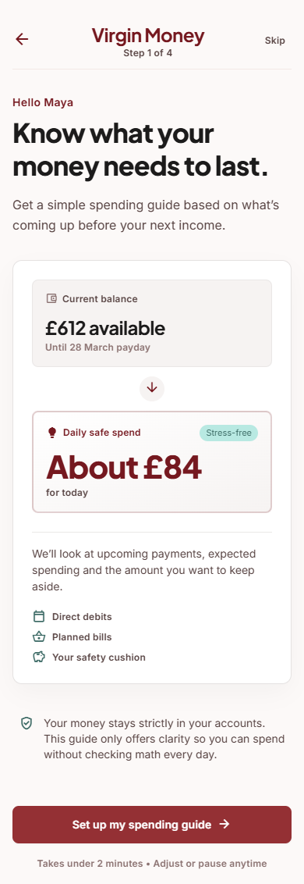
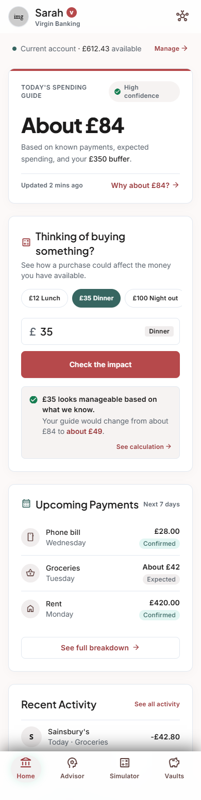

UX / AI product design · Submitted app work · 2026
Virgin Money
Freelance UX and AI product design for Virgin Money’s app. I researched and prototyped a transparent Today’s Spending Guide, submitted the work, and it is being taken forward for the app.
From an estimate to an explanation.
The early screens below show the onboarding direction and spending-guide concept. They use sample data and document stages of the design work I submitted to Virgin Money.




The question
How could a banking app help a student understand what they might spend today, while being clear about the limits of that estimate? My freelance UX and AI product design work for Virgin Money focused on a Today’s Spending Guide.
Clarity before confidence
The concept uses “about” rather than presenting an estimate as a promise. Known payments, expected spending and a buffer explain what sits behind the figure. A confidence cue and an update time make its status visible.
Let people explore the trade-off
A purchase-impact check lets someone try a spending amount and see how it would change their guide. The sample screen moves from about £84 to about £49 after a £35 purchase, with a route to the calculation.
AI with room for judgement
The design focus was transparency, accessibility and user control. A model’s estimate should support someone’s judgement, with understandable explanations and visible uncertainty. The screens show how that thinking translates into an interface people can understand and question.
Where it stands
I submitted this work to Virgin Money in 2026, and it is being taken forward for its app. The screenshots here document my contribution to the design process: the onboarding direction, the spending guide and the purchase-impact interaction.